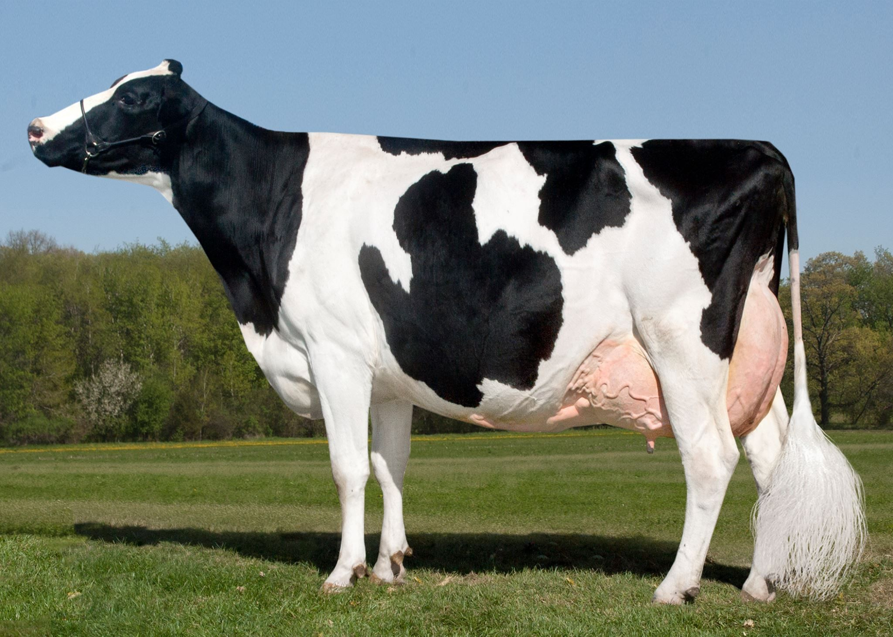

Vacas
Aquí puedes ver la información general sobre las vacas.
| Raza |
Características |
Producción de Leche |
| Holstein |
Alta producción de leche, adaptada a climas templados. |
30 litros/día |
| Jersey |
Leche con alto contenido de grasa, fácil manejo. |
22 litros/día |
| Brahman |
Resistente al calor y enfermedades. |
No aplica (carne) |
Productos y Vacunas
Aquí puedes ver los productos utilizados y las vacunas administradas a las vacas.
Productos
| Producto |
Uso |
Cantidad Recomendada |
| Alimento Concentrado |
Mejorar la producción de leche |
2 kg/día |
| Vitaminas |
Refuerzo del sistema inmunológico |
10 ml/semana |
| Sales Minerales |
Balance nutricional |
100 g/día |
Vacunas
| Vacuna |
Enfermedad |
Frecuencia |
| Brucelosis |
Brucelosis bovina |
Una vez al año |
| Aftosa |
Fiebre aftosa |
Cada 6 meses |
| Clostridiosis |
Clostridiosis |
Cada 6 meses |
Control de Vacas
Aquí puedes gestionar el control de las vacas.
| Raza |
Vacunas |
Alimentación |
Producción |
Observaciones |
| Holstein |
Brucelosis: 2024-01-15 |
Concentrado, Pasto |
25 litros/día |
Leve cojera en pata trasera. |
| Jersey |
Aftosa: 2024-06-10 |
Concentrado, Heno |
22 litros/día |
En tratamiento con vitaminas. |
| Brahman |
Clostridiosis: 2024-08-20 |
Sales Minerales, Pasto |
No aplica (carne) |
Producción estable. |
Vacas Disponibles
Aquí puedes ver las razas de vacas disponibles, sus características y una imagen representativa.
| Raza |
Características |
Imagen |
| Holstein |
Alta producción de leche, adaptada a climas templados. |
 |
| Jersey |
Leche con alto contenido de grasa, fácil manejo. |
|
| Brahman |
Resistente al calor y enfermedades. |
|